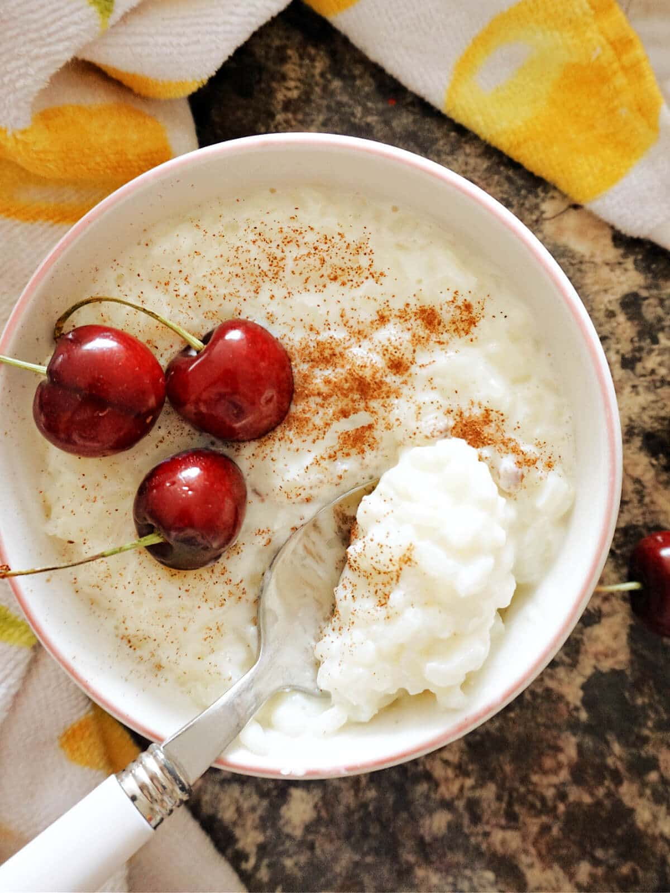

Rice Pudding

Creamy Rice Pudding
This rice pudding is the best, and it gets rave reviews from everyone who tastes it!
Submitted by Allrecipes Member - Updated on May 22, 2024
Rice Pudding Ingredients
- Rice
- Milk
- Salt
- Sugar
- Raisins
- Butter
- Vanilla
- Egg
How to Make Rice Pudding Step-By-Step
Here's a very brief overview of what you can expect when you make homemade rice pudding:
- Cook the rice.
- Cook the cooked rice, some of the milk, sugar, and salt over medium heat until thick.
- Stir in the remaining milk, egg, and raisins. Cook for two more minutes.
- Remove from heat and stir in the butter and vanilla.